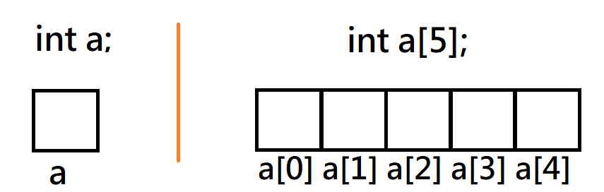

撲克牌梭哈(進階題1)
Suit: Spade (S), Heart (H), Diamond (D), Club (C). S > H > D > C.
Face: A, 2, ..., J, Q, K. The point of 2~10 is 2~10,
A is 14, and J is 11, Q is 12, K is 13.
Type 編號:
1. 散牌 : 單一張牌。
2. 一對 : 兩張數字一樣為 Pair。
3. 兩對 : 2 組 Pair 的牌為 Two pair。
4. 三條 : 三張一樣數字的為 Three of a Kind。
5. 順子 : 數字連續的 5 張牌為 Straight,包括[2, 3, 4, 5, 6],..,
[11, 12, 13, 14, 2], [12, 13 ,14, 2, 3], [13 ,14, 2, 3, 4], [14,2, 3, 4, 5]。
6. 同花 : 五張同一花色的牌為 Flush。
7. 葫蘆 : Three of a Kind 加一個 Pair 為 Full House。
8. 四條 : 四張一樣數字為 Four of a Kind。
9. 同花順 : 數字連續的 5 張且花色一樣為 Straight Flush。
撲克牌梭哈(進階題1)
輸入說明:
輸入兩組牌,判斷哪組牌型編號較大,輸出編號。
1.每一列輸入一組牌 5 張撲克 encode,空格分開。
(encode : Face+Suit. 10S is Spade 10, 7D is diamond 7, QC is club Q.)
2. 檢查任一組是否輸入錯誤,若錯誤,output "Error input"。
3. 檢查所有牌是否有重複,若重複,output "Duplicate deal" 。
4. "Error input"和"Duplicate deal"同時發生則輸出"Error input"
輸出說明 :
1. 根據輸入,輸出相對應的牌型,1~9 整數,代表牌型編號; 以「最大牌型輸出」。
2. 數字連續定義為:K(13) 和 A(14) 有相連,A(14) 和 2 有相連,依此類推。
撲克牌梭哈(進階題1)

撲克牌梭哈(進階題1)
1. 散牌 6. 同花
2. 一對 7. 葫蘆
3. 兩對 8. 四條
4. 三條 9. 同花順
5. 順子
Tips
#include<stdio.h>
#include<stdbool.h>
int card_type(int arr[]); // 找出該組牌的最大牌型
int main()
{
char Face[] = {'2','3','4','5','6','7','8','9',' ','J','Q','K','A'}; // 把10略過可以讓陣列保持一維，另外作判斷看數字是否為10
char Suit[] = {'C','D','H','S'};
char set[10][5]; // 以字串方式儲存牌組
int set_int[10] = {0}; // 把牌組存成整數
int set_1_int[5], set_2_int[5]; // 第一組牌, 第二組牌
// 輸入兩組牌
// 把牌組轉換成對應數字 Face * 10 + Suit，要注意數字10
// 把set_int分成兩個字串set_1_int、set_2_int
// 把set_1_int、set_2_int由小到大排序
// 把set_1_int、set_2_int丟到card_type，取得各自的最大牌型編號
// 比較哪個牌型較大，輸出最大牌型編號
return 0;
}
int card_type(int arr[])
{
int set[5]; // 儲存傳入的陣列
bool is_type[10] = {false}; // 牌組是否形成牌型
int same_num[4] = {0}; // 從index後面算有幾張是相同的數字
is_type[1] = true; // 無牌型為散牌
// 判斷是否為 順子(5)
// 判斷是否為 同花(6)
// 判斷是否為 同花順(9) = 同花(6) + 順子(5), 若是直接回傳 9
// 計算牌組中有多少張數字一樣的牌,
for(int i = 0; i < 4; i++)
{
for(int j = i + 1; j <= 4; j++)
{
if(set[i] / 10 == set[j] / 10)
{
same_num[i]++;
}
}
i += same_num[i];
}
// 根據same_num可以判斷是否為四條(8)、三條(4)、兩對(3)、一對(2), 若是四條直接回傳 8
// 判斷是否為 葫蘆(7) = 三條(4) + 一對(2), , 若是直接回傳 7
// 若是牌型 7、8、9 前面已return，且要輸出最大牌型，所以從牌型6開始由大到小檢查是否符合
}
Face * 10 + Suit
例 :
QH KD AC 2D 3S
122 131 140 21 33 排序後 -> 21 33 122 131 140
[11, 12, 13, 14, 2] -> 20, 110, 120, 130, 140 (110 - 20 = 90)
[12, 13, 14, 2, 3] -> 20, 30, 120, 130, 140 (120 - 30 = 90)
[13, 14, 2, 3, 4] -> 20, 30, 40, 130, 140 (130 - 40 = 90)
[14, 2, 3, 4, 5] -> 20, 30, 40, 50, 140 (140 - 50 = 90)
可用這點來判斷牌組是否為順子。
Face * 10 + Suit
例 :
9D 8C 8S 8H 9S
91 80 83 82 93 排序後 -> 80 82 83 91 93
for(int i = 0; i < 4; i++)
{
for(int j = i + 1; j <= 4; j++)
{
if(set[i] / 10 == set[j] / 10)
{
same_num[i]++; // 跳過相同數字的牌
}
}
i += same_num[i];
}
same_num[] = {2,0,0,1},
2 表示排序後index = 0 的後面有兩張牌與它數字相同，
且same_num[]中有兩個非0數字，就代表有兩對。
陣列
用來儲存相同資料型態的變數。
陣列的索引值從0開始。
請參考以下的說明圖示。

氣泡排序法
原理是從第一筆資料開始，逐一比較相鄰兩筆資料
如果兩筆大小順序有誤則做交換，反之則不動
接著再進行下一筆資料比較
所有資料比較完1回合後，可以確保最後一筆資料是正確的位置
解答P1
首先我們先引入函式庫與宣告函式和變數
宣告函式 card_type ，用於找出最大牌型
宣告字元陣列 Face[] 和 Suit[] ，用於轉換牌面數字
宣告二維字元陣列 set[10][5] ，用於存放使用者輸入的牌組
宣告整數陣列 set_int[10] ，用於存放轉換後的牌面數字
宣告整數陣列 set_1_int[5] 和 set_2_int[5] ，用於分別存放轉換後的兩組牌
宣告布林值 is_Duplicate ，用於判斷是否重複發牌
宣告整數 type1和type2 ，用於存放兩組牌的牌型編號
#include<stdio.h>
#include<stdbool.h>
int card_type(int arr[]); // 找出該組牌的最大牌型
int main()
{
char Face[] = {'2','3','4','5','6','7','8','9',' ','J','Q','K','A'}; // 把10略過可以讓陣列保持一維，另外作判斷看數字是否為10
char Suit[] = {'C','D','H','S'};
char set[10][5]; // 以字串方式儲存牌組
int set_int[10] = {0}; // 把牌組存成整數
int set_1_int[5], set_2_int[5]; // 第一組牌, 第二組牌
bool is_Duplicate = false;
int type1 = 0, type2 = 0; // 兩組牌的牌型編號
解答P2
讓使用者輸入兩組牌
// 讓使用者輸入兩組牌，將第一組牌分別存進 set[0], ... ,set[4]，將第二組牌分別存進 set[5], ... ,set[9]
scanf("%s %s %s %s %s",set[0],set[1],set[2],set[3],set[4]);
scanf("%s %s %s %s %s",set[5],set[6],set[7],set[8],set[9]);
解答P3
讓使用者輸入兩組牌
解答P4
判斷是否重複發牌
if(is_Duplicate == true) //判斷是否重複發牌
{
printf("Duplicate deal");
return 0;
}
解答P5
將剛才轉換好的set_int分成兩個字串
set_1_int表示第一組牌
set_2_int表示第二組牌
// 把set_int分成兩個字串set_1_int、set_2_int
for(int i = 0; i < 10; i++)
{
if(i < 5) //將前五張牌轉換後的整數存進set_1_int，作為第一組牌
{
set_1_int[i] = set_int[i];
}
else //將後五張牌轉換後的整數set_2_int，作為第二組牌
{
set_2_int[i-5] = set_int[i];
}
}
解答P6
用氣泡排序法將兩組牌分別由小到大排序
// 用泡泡排序法把set_1_int、set_2_int由小到大排序
int temp;
for (int i = 0; i < 4; i++) //循環N-1次
{
for (int j = 0; j < 4 - i; j++) //每次循環要比較的次數
{
if (set_1_int[j] > set_1_int[j + 1]) //比大小後交換
{
temp = set_1_int[j];
set_1_int[j] = set_1_int[j + 1];
set_1_int[j + 1] = temp;
}
if (set_2_int[j] > set_2_int[j + 1]) //比大小後交換
{
temp = set_2_int[j];
set_2_int[j] = set_2_int[j + 1];
set_2_int[j + 1] = temp;
}
}
}
解答P7
將兩組牌分別傳進card_type，取得各自的最大牌型編號
比較牌型大小，輸出最大牌型編號
主函式結束
// 把set_1_int、set_2_int丟到card_type，取得各自的最大牌型編號
type1 = card_type(set_1_int);
type2 = card_type(set_2_int);
// 比較哪個牌型較大，輸出最大牌型編號
if(type1 > type2)
{
printf("%d",type1);
}
else
{
printf("%d",type2);
}
return 0;
}
解答P8
用函式card_type判斷最大牌型
定義int set[5]儲存傳入的陣列
定義bool is_type[10]判斷1~9種牌型是否成立
int card_type(int arr[])
{
int set[5]; // 儲存傳入的陣列
bool is_type[10] = {false}; // 牌組是否形成牌型
int same_num[4] = {0}; // 從index後面算有幾張是相同的數字
is_type[1] = true; // 無牌型為散牌
for(int i = 0; i < 5; i++)
{
set[i] = arr[i];
}
解答P9
判斷牌型 順子(5) 是否成立
分別判斷是否有一般的順子或有分段的順子
// 判斷是否為 順子(5)
for(int i = 0; i < 4; i++)
{
//分別判斷是否有一般的順子或有分段的順子
if( (set[i] / 10 + 1) != (set[i+1] / 10) && (set[i] / 10 + 9) != (set[i+1] / 10) )
{
is_type[5] = false;
break;
}
is_type[5] = true;
}
解答P10
判斷牌型 同花(6) 是否成立
判斷前一張牌的花色是否與後一張牌的花色不同
有不同則跳出迴圈，判斷 同花(6) 不成立
// 判斷是否為 同花(6)
for(int i = 0; i < 4; i++)
{
//取餘得到兩張牌的花色
int r1 = set[i] % 10;
int r2 = set[i+1] % 10;
if( r1 != r2) //判斷前一張牌的花色是否與後一張牌的花色不同
{
is_type[6] = false;
break;
}
is_type[6] = true;
}
解答P11
判斷牌型 同花順(9) 是否成立
同花順即為同花兼順子的組合，因此若兩者成立即成立 同花順(9)
同花順(9) 的牌型編號最大，因此可直接優先回傳 9
// 判斷是否為 同花順(9) = 同花(6) + 順子(5)
if(is_type[5] == true && is_type[6] == true)
{
return 9;
}
解答P12
判斷牌組中是否有重複點數的牌
將計算完的結果存至陣列 same_num
// 計算牌組中有多少張點數一樣的牌, 例如: 2D 2H 5C 5H 8D, same_num[] = {1,0,1,0}
for(int i = 0; i < 4; i++) //判斷是否有重複點數 ( 4 + 3 + 2 + 1 ) 次，因為比過的不用重複比
{
for(int j = i + 1; j <= 4; j++)
{
if(set[i] / 10 == set[j] / 10) //判斷目前指定牌的數字是否與後面其他張牌的點數相同
{
same_num[i]++;
}
}
i += same_num[i]; //i = i + same_num[i];
}
解答P13
根據陣列 same_num 先判斷牌型 四條(8)、三條(4)、一對(2) 是否成立
若 四條(8) 成立，優先回傳 8
// 根據same_num可以判斷是否為四條(8)、三條(4)、兩對(3)、一對(2)
int pair = 0; // Pair的數量
for (int i = 0; i < 4; i++)
{
if(same_num[i] > 0)
{
pair++;
if(same_num[i] == 3) //與其他 3 張牌重複，確定是四條(8)，回傳牌組編號
{
return 8;
}
else if(same_num[i] == 2) //判斷是否為三條(4)
{
is_type[4] = true;
}
else if(same_num[i] == 1) //判斷是否為一對(2)
{
is_type[2] = true;
}
}
}
解答P14
根據pair牌型 兩對(3) 是否成立
再依照前面的牌型成立情況判斷牌型 葫蘆(7) 是否成立
若 葫蘆(7) 成立，優先回傳 7
// 判斷是否為兩對(3)
if(pair == 2)
{
is_type[3] = true;
}
// 判斷是否為 葫蘆(7) = 三條(4) + 一對(2)
if(is_type[4] == true && is_type[2] == true)
{
return 7;
}
解答P15
最後依照前面的牌型成立情況判斷最大牌型
回傳最大牌型
程式結束
// 若是牌型 7、8、9 前面已return，且要輸出最大牌型，所以從牌型6開始由大到小檢查是否符合
for(int i = 6; i > 0; i--)
{
if(is_type[i] == true)
{
return i;
}
}
}